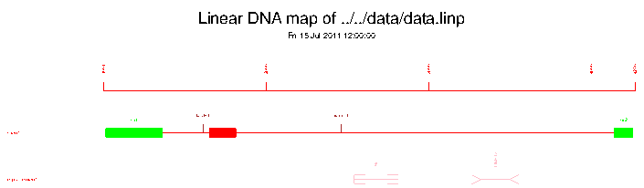

|
|
lindna |
Please help by correcting and extending the Wiki pages.
lindna draws linear maps of DNA constructs. It uses the graphical shapes ticks, ranges, and blocks to represent genetic markers (e.g, genes and ESTs) and places them according to their position in a DNA fragment. The markers can be organized in different groups. It reads an input file containing the names and positions of the genetic markers, and data for controlling the appearance of the markers (drawing commands). The output is a plot with with the linear DNA map.
% lindna -graph cps
Draws linear maps of DNA constructs
Commands to the lindna drawing program file [inputfile]: data.linp
Draw a ruler [Y]:
Open : Open blocks
Filled : Filled blocks
Outline : Black border
Type of blocks [Filled]:
Created lindna.ps
|
Go to the input files for this example
Go to the output files for this example
Draws linear maps of DNA constructs
Version: EMBOSS:6.2.0
Standard (Mandatory) qualifiers:
[-infile] infile [inputfile] Commands to the lindna drawing
program file
-[no]ruler boolean [Y] Draw a ruler
-blocktype menu [Filled] Type of blocks (Values: Open (Open
blocks); Filled (Filled blocks); Outline
(Black border))
-graphout graph [$EMBOSS_GRAPHICS value, or x11] Graph type
(ps, hpgl, hp7470, hp7580, meta, cps, x11,
tek, tekt, none, data, xterm, png, gif)
Additional (Optional) qualifiers:
-maxgroups integer [20] Maximum number of groups (Integer 1 or
more)
-maxlabels integer [10000] Maximum number of labels (Integer 1
or more)
-intersymbol selection [Straight] Type of junctions between blocks
-intercolour integer [1] Colour of junctions between blocks
(enter a colour number) (Integer from 0 to
15)
-interticks boolean [N] Horizontal junctions between ticks
-gapsize integer [500] Interval between ticks in the ruler
(Integer 0 or more)
-ticklines boolean [N] Vertical lines at the ruler's ticks
-textheight float [1.0] Height of text. Enter a number <1.0 or
>1.0 to decrease or increase the size,
respectively (Number 0.000 or more)
-textlength float [1.0] Length of text. Enter a number <1.0 or
>1.0 to decrease or increase the size,
respectively (Number 0.000 or more)
-margin float [1.0] Width of left margin. This is the
region left to the groups where the names of
the groups are displayed. Enter a number
<1.0 or >1.0 to decrease or increase the
size, respectively (Number 0.000 or more)
-tickheight float [1.0] Height of ticks. Enter a number <1.0
or >1.0 to decrease or increase the size,
respectively (Number 0.000 or more)
-blockheight float [1] Height of blocks. Enter a number <1.0 or
>1.0 to decrease or increase the size,
respectively (Number 0.000 or more)
-rangeheight float [1.0] Height of range ends. Enter a number
<1.0 or >1.0 to decrease or increase the
size, respectively (Number 0.000 or more)
-gapgroup float [1.0] Space between groups. Enter a number
<1.0 or >1.0 to decrease or increase the
size, respectively (Number 0.000 or more)
-postext float [1.0] Space between text and ticks, blocks,
and ranges. Enter a number <1.0 or >1.0 to
decrease or increase the size, respectively
(Number 0.000 or more)
Advanced (Unprompted) qualifiers: (none)
Associated qualifiers:
"-graphout" associated qualifiers
-gprompt boolean Graph prompting
-gdesc string Graph description
-gtitle string Graph title
-gsubtitle string Graph subtitle
-gxtitle string Graph x axis title
-gytitle string Graph y axis title
-goutfile string Output file for non interactive displays
-gdirectory string Output directory
General qualifiers:
-auto boolean Turn off prompts
-stdout boolean Write first file to standard output
-filter boolean Read first file from standard input, write
first file to standard output
-options boolean Prompt for standard and additional values
-debug boolean Write debug output to program.dbg
-verbose boolean Report some/full command line options
-help boolean Report command line options and exit. More
information on associated and general
qualifiers can be found with -help -verbose
-warning boolean Report warnings
-error boolean Report errors
-fatal boolean Report fatal errors
-die boolean Report dying program messages
-version boolean Report version number and exit
|
| Qualifier | Type | Description | Allowed values | Default | ||||||
|---|---|---|---|---|---|---|---|---|---|---|
| Standard (Mandatory) qualifiers | ||||||||||
| [-infile] (Parameter 1) |
infile | Commands to the lindna drawing program file | Input file | inputfile | ||||||
| -[no]ruler | boolean | Draw a ruler | Boolean value Yes/No | Yes | ||||||
| -blocktype | list | Type of blocks |
|
Filled | ||||||
| -graphout | graph | Graph type | EMBOSS has a list of known devices, including ps, hpgl, hp7470, hp7580, meta, cps, x11, tek, tekt, none, data, xterm, png, gif | EMBOSS_GRAPHICS value, or x11 | ||||||
| Additional (Optional) qualifiers | ||||||||||
| -maxgroups | integer | Maximum number of groups | Integer 1 or more | 20 | ||||||
| -maxlabels | integer | Maximum number of labels | Integer 1 or more | 10000 | ||||||
| -intersymbol | selection | Type of junctions between blocks | Choose from selection list of values | Straight | ||||||
| -intercolour | integer | Colour of junctions between blocks (enter a colour number) | Integer from 0 to 15 | 1 | ||||||
| -interticks | boolean | Horizontal junctions between ticks | Boolean value Yes/No | No | ||||||
| -gapsize | integer | Interval between ticks in the ruler | Integer 0 or more | 500 | ||||||
| -ticklines | boolean | Vertical lines at the ruler's ticks | Boolean value Yes/No | No | ||||||
| -textheight | float | Height of text. Enter a number <1.0 or >1.0 to decrease or increase the size, respectively | Number 0.000 or more | 1.0 | ||||||
| -textlength | float | Length of text. Enter a number <1.0 or >1.0 to decrease or increase the size, respectively | Number 0.000 or more | 1.0 | ||||||
| -margin | float | Width of left margin. This is the region left to the groups where the names of the groups are displayed. Enter a number <1.0 or >1.0 to decrease or increase the size, respectively | Number 0.000 or more | 1.0 | ||||||
| -tickheight | float | Height of ticks. Enter a number <1.0 or >1.0 to decrease or increase the size, respectively | Number 0.000 or more | 1.0 | ||||||
| -blockheight | float | Height of blocks. Enter a number <1.0 or >1.0 to decrease or increase the size, respectively | Number 0.000 or more | 1 | ||||||
| -rangeheight | float | Height of range ends. Enter a number <1.0 or >1.0 to decrease or increase the size, respectively | Number 0.000 or more | 1.0 | ||||||
| -gapgroup | float | Space between groups. Enter a number <1.0 or >1.0 to decrease or increase the size, respectively | Number 0.000 or more | 1.0 | ||||||
| -postext | float | Space between text and ticks, blocks, and ranges. Enter a number <1.0 or >1.0 to decrease or increase the size, respectively | Number 0.000 or more | 1.0 | ||||||
| Advanced (Unprompted) qualifiers | ||||||||||
| (none) | ||||||||||
| Associated qualifiers | ||||||||||
| "-graphout" associated graph qualifiers | ||||||||||
| -gprompt | boolean | Graph prompting | Boolean value Yes/No | N | ||||||
| -gdesc | string | Graph description | Any string | Linear DNA map | ||||||
| -gtitle | string | Graph title | Any string | |||||||
| -gsubtitle | string | Graph subtitle | Any string | |||||||
| -gxtitle | string | Graph x axis title | Any string | |||||||
| -gytitle | string | Graph y axis title | Any string | |||||||
| -goutfile | string | Output file for non interactive displays | Any string | |||||||
| -gdirectory | string | Output directory | Any string | |||||||
| General qualifiers | ||||||||||
| -auto | boolean | Turn off prompts | Boolean value Yes/No | N | ||||||
| -stdout | boolean | Write first file to standard output | Boolean value Yes/No | N | ||||||
| -filter | boolean | Read first file from standard input, write first file to standard output | Boolean value Yes/No | N | ||||||
| -options | boolean | Prompt for standard and additional values | Boolean value Yes/No | N | ||||||
| -debug | boolean | Write debug output to program.dbg | Boolean value Yes/No | N | ||||||
| -verbose | boolean | Report some/full command line options | Boolean value Yes/No | Y | ||||||
| -help | boolean | Report command line options and exit. More information on associated and general qualifiers can be found with -help -verbose | Boolean value Yes/No | N | ||||||
| -warning | boolean | Report warnings | Boolean value Yes/No | Y | ||||||
| -error | boolean | Report errors | Boolean value Yes/No | Y | ||||||
| -fatal | boolean | Report fatal errors | Boolean value Yes/No | Y | ||||||
| -die | boolean | Report dying program messages | Boolean value Yes/No | Y | ||||||
| -version | boolean | Report version number and exit | Boolean value Yes/No | N | ||||||
Start 1001 End 4270 group exons label Block 1011 1362 3 H ex1 endlabel label Tick 1610 8 H EcoR1 endlabel label Block 1647 1815 1 H endlabel label Tick 2459 8 H BamH1 endlabel label Block 4139 4258 3 H ex2 endlabel endgroup group repeat-regions label Range 2541 2812 [ ] 5 V Alu endlabel label Range 3322 3497 > < 5 V MER13 endlabel |
Blank lines in the input file are ignored.
The file is organized in several fields separated by one or more space or TAB characters.
The first non-blank line gives the start position of the DNA fragment to be drawn after the keyword 'Start'. The end position is on the second line following the keyword 'End'.
Then, one or more groups (up to a maximum of 20) of genetic markers are defined. Each group begins with a line consisting of the keyword 'group' and ends with a line consisting of the keyword 'endgroup'.
If desired, a group name can be given on the very next line. Spaces and tabulations are allowed but only the first 20 characters of that name (including spaces) will be displayed.
Next, the individual markers (up to a maximum of 1000) of the group are described. Each marker begins with a line consisting of the keyword 'label' and ends with a line consisting of the keyword 'endlabel'.
Do not start a new marker (by using a 'label' line) before you have closed the previous marker (by using an 'endlabel' line). You must end a previous marker specification before starting a new one. i.e. do not overlap marker specifications in the input file.
For each marker, the line following the 'label' line describes the marker. Three types of markers can be drawn: ticks, blocks, and ranges.
For a tick, the descriptive line begins with the keyword 'Tick', followed by the position of the tick in the DNA fragment, and a number from 0 to 15 specifying the color in which the tick will be drawn (a list of available colors is given below). If desired, one or more names can be written above the tick. In this case an optional letter H or V should be added to the line. H or V indicate whether the text will be horizontal or vertical, respectively. If no letter is specified, H is assumed by default. A list of one or more names can be given on the next lines with one name per line.
For a block, the descriptive line begins with the keyword 'Block', followed by the start and end positions of the block in the DNA fragment, and the number of the block's color. If desired, one or more names can be written above the block. Names are given on the following lines. An optional letter H or V can be added to the end of the descriptive line to specify the orientation of the name(s).
For a range, the descriptive line begins with the keyword 'Range', followed by the start and end positions of the range in the DNA fragment. Next on the line are the types of boundaries that are to be drawn. The user can choose among '>', '<', '[', ']' and '|' for both start and end boundaries. If none of these types is wanted for a given boundary, then a point '.' must be entered. Next is the color number. If desired, one or more names can be written above the range. Names are given on the following lines. An optional letter H or V can be added to the end of the descriptive line to specify the orientation of the name(s).
For any type of markers, names will be written in the same color as the marker. Also, try to avoid long names.
The colors defined in the PLPLOT graphics library are:
0 "BLACK", 1 "RED", 2 "YELLOW", 3 "GREEN", 4 "AQUAMARINE", 5 "PINK", 6 "WHEAT", 7 "GREY", 8 "BROWN", 9 "BLUE", 10 "BLUEVIOLET", 11 "CYAN", 12 "TURQUOISE", 13 "MAGENTA", 14 "SALMON", and 15 "WHITE".
This format can also be used for the program "cirdna".

Whether to draw a rule and the type of block-fill style must be specified. There are many other (optional) qualifiers to control the appearance of the plot which will be prompted for if the program is run with -options on the command line and.
| Program name | Description |
|---|---|
| abiview | Display the trace in an ABI sequencer file |
| cirdna | Draws circular maps of DNA constructs |
| pepnet | Draw a helical net for a protein sequence |
| pepwheel | Draw a helical wheel diagram for a protein sequence |
| prettyplot | Draw a sequence alignment with pretty formatting |
| prettyseq | Write a nucleotide sequence and its translation to file |
| remap | Display restriction enzyme binding sites in a nucleotide sequence |
| seealso | Finds programs with similar function to a specified program |
| showalign | Display a multiple sequence alignment in pretty format |
| showdb | Displays information on configured databases |
| showfeat | Display features of a sequence in pretty format |
| showpep | Displays protein sequences with features in pretty format |
| showseq | Displays sequences with features in pretty format |
| sixpack | Display a DNA sequence with 6-frame translation and ORFs |
| textsearch | Search the textual description of sequence(s) |